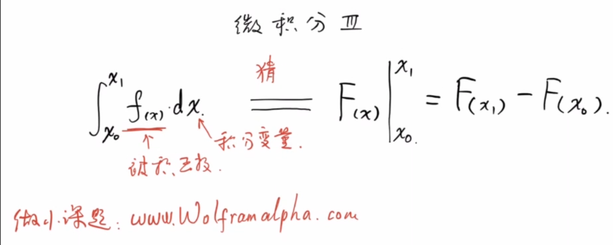
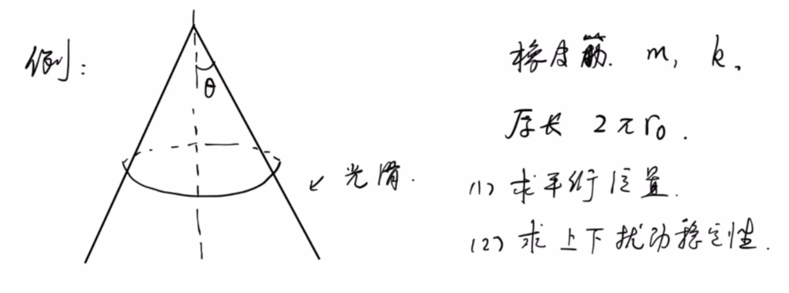
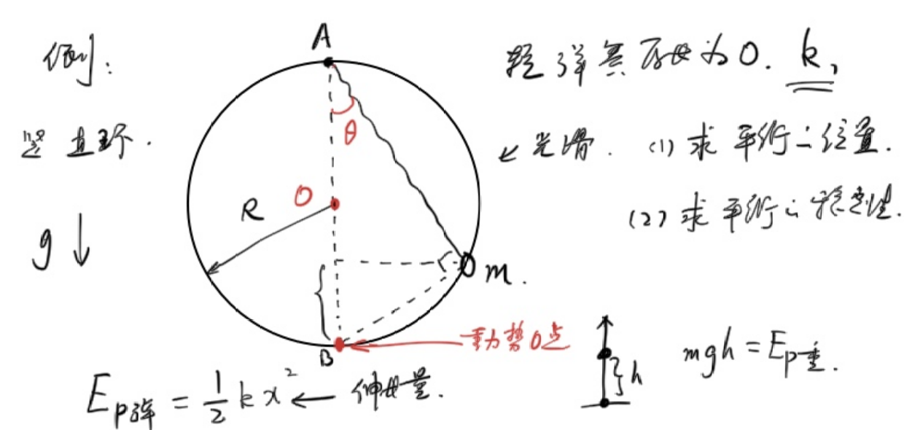
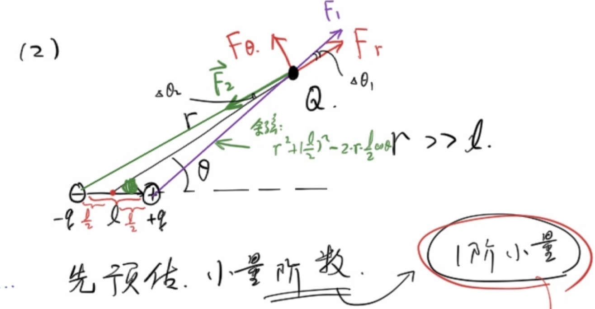

<meta data-alternate="https://freshmark.sunisalex.org/en/posts/physics/basic-calculus-03/" data-article="true" data-canonical="https://freshmark.sunisalex.org/posts/physics/basic-calculus-03/" data-description="本文介绍微积分在物理中的应用，涵盖质心计算（圆锥、半球壳、半球体）、保守力势能与平衡稳定性判据、泰勒小量展开及其在电偶极子受力、相对论动能还原、非均匀浮力等经典问题中的应用。" data-freshmark-page data-title="微积分基础导论:微积分应用1 — Freshmark"><main><header class="container article-header"><a href="/" class="back-link">← 返回全部文章</a><p class="eyebrow article-subject">物理</p><h1>微积分基础导论:微积分应用1</h1><p class="article-dek">本文介绍微积分在物理中的应用，涵盖质心计算（圆锥、半球壳、半球体）、保守力势能与平衡稳定性判据、泰勒小量展开及其在电偶极子受力、相对论动能还原、非均匀浮力等经典问题中的应用。</p><div class="article-meta"><time datetime="2026-05-24">2026年5月24日</time><span>4 分钟阅读</span><span>物理竞赛 · 微积分</span><span class="view-count" data-article-view-count hidden>本文访问量 <strong data-article-views></strong></span><a href="index.md" download>下载 Markdown</a><button type="button" class="article-share" data-share-article data-share-text="本文介绍微积分在物理中的应用，涵盖质心计算（圆锥、半球壳、半球体）、保守力势能与平衡稳定性判据、泰勒小量展开及其在电偶极子受力、相对论动能还原、非均匀浮力等经典问题中的应用。" data-share-title="微积分基础导论:微积分应用1"><span data-share-label>分享文章</span></button><output aria-live="polite" class="visually-hidden" data-share-status role="status"></output></div></header><div class="article-wrap"><aside class="toc"><div class="toc-head"><p>本文目录</p><button type="button" class="toc-toggle" aria-expanded="false" aria-label="展开或收起目录" data-toc-toggle><span class="toc-toggle-label">目录</span><span class="toc-toggle-icon" aria-hidden="true"></span></button></div><nav aria-label="目录" class="toc-links" data-toc-links><a href="#朝花夕拾" class="toc-level-2">朝花夕拾</a><a href="#例1" class="toc-level-3">例1</a><a href="#例3" class="toc-level-3">例3</a><a href="#与半球壳的本质区别" class="toc-level-4">与半球壳的本质区别</a><a href="#例4" class="toc-level-3">例4</a><a href="#法一" class="toc-level-4">法一</a><a href="#法二" class="toc-level-4">法二</a><a href="#平衡的稳定性" class="toc-level-3">平衡的稳定性</a><a href="#导数极值第二充分条件" class="toc-level-1">导数极值第二充分条件</a><a href="#定理内容" class="toc-level-3">定理内容</a><a href="#应用示例" class="toc-level-3">应用示例</a><a href="#例5" class="toc-level-3">例5</a><a href="#例6" class="toc-level-3">例6</a><a href="#小量展开" class="toc-level-2">小量展开</a><a href="#例7" class="toc-level-3">例7</a><a href="#泰勒展开" class="toc-level-3">泰勒展开</a><a href="#例8" class="toc-level-3">例8</a><a href="#例9" class="toc-level-3">例9</a><a href="#例10" class="toc-level-3">例10</a><a href="#例题电偶极子的受力" class="toc-level-1">例题：电偶极子的受力</a><a href="#已知条件" class="toc-level-2">已知条件</a><a href="#题目" class="toc-level-2">题目</a><a href="#求" class="toc-level-3">求：</a><a href="#例11" class="toc-level-3">例11</a><a href="#例12" class="toc-level-3">例12</a><a href="#sonnet-46总结" class="toc-level-2">Sonnet 4.6总结</a><a href="#总结" class="toc-level-2">总结</a></nav></aside><article class="prose"><h2 id="朝花夕拾">朝花夕拾</h2><p><picture class="responsive-picture"><source srcset="i.freshmark-a16d14db9498-480w.avif 480w, i.freshmark-a16d14db9498-960w.avif 960w, i.freshmark-a16d14db9498-1116w.avif 1116w" type="image/avif"><source srcset="i.freshmark-a16d14db9498-480w.webp 480w, i.freshmark-a16d14db9498-960w.webp 960w, i.freshmark-a16d14db9498-1116w.webp 1116w" type="image/webp"></picture></p><h3 id="例1">例1</h3><p>有一个质量均匀的圆锥，其母线与高的夹角为<span class="math-expression math-inline" data-math-source="\theta"></span>，底面半径为<span class="math-expression math-inline" data-math-source="r"></span>,密度为<span class="math-expression math-inline" data-math-source="\rho"></span>.</p><p>(1)求总质量</p><p>(2)求重心位置</p><p>设原点为锥顶，圆锥的高为x轴</p><p>(1)</p><p><span class="math-expression math-display" data-math-source="\begin{gathered} dm=\rho Sdh\\ =\pi\rho (h\tan\theta)^2dh\\ m=\int dm\\ =\pi\rho\tan^2\theta\int_0^{r\cot\theta}h^2dh\\ =\pi\rho\tan^2\theta\left(\frac{1}{3}h^3)\right|_0^{r\cot\theta}\\ =\frac{1}{3}\pi\rho r^3\cot\theta \end{gathered}" data-math-display></span></p><p>(2)</p><p>由对称性知，重心在圆锥的高上.</p><p><span class="math-expression math-display" data-math-source="\begin{gathered} x_c=\frac{\int m_ix_i}{m}\\ =\frac{\int_0^{r\cot\theta}\pi\rho\tan^2\theta x^3dx}{m}\\ =\frac{\pi\rho\tan^2\theta\int_0^{r\cot\theta}x^3dx}{\frac{1}{3}\pi\rho r^3\cot\theta}\\ =3\frac{\tan^3\theta}{r^3}\frac{(r\cot\theta)^4}{4}\\ =\frac{3}{4}r\cot\theta \end{gathered}" data-math-display></span></p><h3 id="例3">例3</h3><p>求均匀半球<strong>壳</strong>的重心位置</p><p>以球心为原点，垂直截面方向为x轴</p><p>不妨设单位面积质量为1.</p><p>仿照求n维球的体积，我们考虑在<span class="math-expression math-inline" data-math-source="\theta,d\theta"></span>处各切一刀。</p><h4 id="与半球壳的本质区别">与半球壳的本质区别</h4><table><thead><tr><th></th><th>n维球体积</th><th>半球壳面积</th></tr></thead><tbody><tr><td>切片方式</td><td>水平薄片，厚度 <span class="math-expression math-inline" data-math-source="\|dy\| = R\sin\theta\,d\theta"></span></td><td>球面环形，弧长 <span class="math-expression math-inline" data-math-source="dl = R\,d\theta"></span></td></tr><tr><td><span class="math-expression math-inline" data-math-source="R\sin\theta\,d\theta"></span></td><td>✅ 正确（竖直厚度）</td><td>❌ 错误（应为弧长）</td></tr></tbody></table><p><span class="math-expression math-display" data-math-source="\begin{gathered} dm=(2\pi R\sin\theta)Rd\theta\\ x_c=\frac{\int_{0}^{\frac{\pi}{2}} R\cos\theta dm}{2\pi R^2}\\ =\frac{2\pi R^3\int_{0}^{\frac{\pi}{2}}\sin\theta\cos\theta d\theta}{2\pi R^2}\\ =\frac{2\pi R^3\int_{0}^{\frac{\pi}{2}}\sin\theta d\sin\theta}{2\pi R^2}\\ =\frac{2\pi R^3\int_{0}^{1}udu}{2\pi R^2}\\ =\frac{2\pi R^3\times\frac{1}{2}}{2\pi R^2}\\ =\frac{1}{2}R \end{gathered}" data-math-display></span></p><h3 id="例4">例4</h3><p>求均匀半球<strong>体</strong>的重心位置</p><p>以球心为原点，垂直截面方向为x轴</p><p>不妨设单位体积质量为1.</p><p>我们平行截面横切：</p><h4 id="法一">法一</h4><p><span class="math-expression math-display" data-math-source="\begin{gathered} dm=\pi (R\sin\theta)^2\sin\theta Rd\theta\\ x_c=\frac{\int R\cos\theta dm}{\frac{2}{3}\pi R^3}\\ =\frac{\pi R^4\int_{0}^{\frac{\pi}{2}}\sin^3\theta\cos\theta d\theta}{\frac{2}{3}\pi R^3}\\ =\frac{3}{2}R\int_{0}^{\frac{\pi}{2}}\sin^3\theta d\sin\theta\\ =\frac{3}{2}R\int_{0}^1u^3du\\ =\frac{3}{8}R \end{gathered}" data-math-display></span></p><h4 id="法二">法二</h4><p><span class="math-expression math-display" data-math-source="\begin{gathered} dm=\pi (R^2-x^2)dx\\ x_c=\frac{\int dmx}{\frac{2}{3}\pi R^3}\\ =\frac{\pi \int_{0}^R (R^2-x^2)xdx}{\frac{2}{3}\pi R^3}\\ =\frac{\pi \left(\frac{R^2}{2}x^2-\frac{1}{4}x^4\right)|_0^R}{\frac{2}{3}\pi R^3}\\ =\frac{3}{8}R \end{gathered}" data-math-display></span></p><h3 id="平衡的稳定性">平衡的稳定性</h3><p>在<strong>保守力</strong>下，若势能处于极值时，则平衡：</p><ul><li>势能处在极大值：不稳定平衡</li><li>势能处在极小值：稳定平衡</li></ul><p>说文解字：保守力做功与路径无关，只与初末位置相关</p><p>重力，引力，静电力都是保守力</p><p>摩擦力是典型的非保守力</p><p><picture class="responsive-picture"><source srcset="image.freshmark-80bacf3097a9-480w.avif 480w, image.freshmark-80bacf3097a9-960w.avif 960w, image.freshmark-80bacf3097a9-1057w.avif 1057w" type="image/avif"><source srcset="image.freshmark-80bacf3097a9-480w.webp 480w, image.freshmark-80bacf3097a9-960w.webp 960w, image.freshmark-80bacf3097a9-1057w.webp 1057w" type="image/webp"></picture></p><h1 id="导数极值第二充分条件">导数极值第二充分条件</h1><h3 id="定理内容">定理内容</h3><p>设函数 <span class="math-expression math-inline" data-math-source="f(x)"></span>&#32;在点 <span class="math-expression math-inline" data-math-source="x_0"></span>&#32;处具有二阶导数，且 <span class="math-expression math-inline" data-math-source="f&#39;(x_0) = 0"></span>（即 <span class="math-expression math-inline" data-math-source="x_0"></span>&#32;为驻点）：</p><ol><li>若 <span class="math-expression math-inline" data-math-source="f&#39;&#39;(x_0) &lt; 0"></span>，则 <span class="math-expression math-inline" data-math-source="f(x)"></span>&#32;在 <span class="math-expression math-inline" data-math-source="x_0"></span>&#32;处取得<strong>极大值</strong>。</li><li>若 <span class="math-expression math-inline" data-math-source="f&#39;&#39;(x_0) &gt; 0"></span>，则 <span class="math-expression math-inline" data-math-source="f(x)"></span>&#32;在 <span class="math-expression math-inline" data-math-source="x_0"></span>&#32;处取得<strong>极小值</strong>。</li><li>若 <span class="math-expression math-inline" data-math-source="f&#39;&#39;(x_0) = 0"></span>，则该定理<strong>失效</strong>，无法判定是否取得极值（需使用第一充分条件或更高阶导数判断）。</li></ol><hr><h3 id="应用示例">应用示例</h3><p>求函数 <span class="math-expression math-inline" data-math-source="f(x) = x^3 - 3x"></span>&#32;的极值。</p><p><strong>解：</strong> 首先求一阶导数： <span class="math-expression math-display" data-math-source="f&#39;(x) = 3x^2 - 3" data-math-display></span></p><p>令 <span class="math-expression math-inline" data-math-source="f&#39;(x) = 0"></span>，解得驻点为： <span class="math-expression math-display" data-math-source="x_1 = 1, \quad x_2 = -1" data-math-display></span></p><p>再求二阶导数： <span class="math-expression math-display" data-math-source="f&#39;&#39;(x) = 6x" data-math-display></span></p><p>将驻点代入二阶导数进行判断：</p><ul><li>对于 <span class="math-expression math-inline" data-math-source="x_1 = 1"></span>： <span class="math-expression math-display" data-math-source="f&#39;&#39;(1) = 6 &gt; 0" data-math-display></span> 所以 <span class="math-expression math-inline" data-math-source="f(x)"></span>&#32;在 <span class="math-expression math-inline" data-math-source="x = 1"></span>&#32;处取得<strong>极小值</strong>，极小值为 <span class="math-expression math-inline" data-math-source="f(1) = -2"></span>。</li><li>对于 <span class="math-expression math-inline" data-math-source="x_2 = -1"></span>： <span class="math-expression math-display" data-math-source="f&#39;&#39;(-1) = -6 &lt; 0" data-math-display></span> 所以 <span class="math-expression math-inline" data-math-source="f(x)"></span>&#32;在 <span class="math-expression math-inline" data-math-source="x = -1"></span>&#32;处取得<strong>极大值</strong>，极大值为 <span class="math-expression math-inline" data-math-source="f(-1) = 2"></span>。</li></ul><h3 id="例5">例5</h3><p>有一个质量为<span class="math-expression math-inline" data-math-source="m"></span>,劲度系数为<span class="math-expression math-inline" data-math-source="k"></span>,原长为<span class="math-expression math-inline" data-math-source="2\pi r_0"></span>的橡皮筋，位于母线与高线夹角为<span class="math-expression math-inline" data-math-source="\theta"></span>的圆锥上.</p><p>(1)求平衡位置</p><p>(2)求上下扰动稳定性</p><p><picture class="responsive-picture"><source srcset="image-1.freshmark-97c3813dfb44-480w.avif 480w, image-1.freshmark-97c3813dfb44-960w.avif 960w, image-1.freshmark-97c3813dfb44-1225w.avif 1225w" type="image/avif"><source srcset="image-1.freshmark-97c3813dfb44-480w.webp 480w, image-1.freshmark-97c3813dfb44-960w.webp 960w, image-1.freshmark-97c3813dfb44-1225w.webp 1225w" type="image/webp"></picture></p><p>(1)</p><p>设平衡位置到锥顶的高度差为<span class="math-expression math-inline" data-math-source="z"></span>,平衡时橡皮筋伸长量为<span class="math-expression math-inline" data-math-source="x"></span></p><p><span class="math-expression math-display" data-math-source="\begin{gathered} x=2\pi (z\tan\theta-r_0)\\ E_p=\frac{1}{2}kx^2-mgz\\ =2\pi^2 k(z\tan\theta-r_0)^2-mgz\\ =2\pi^2k\tan^2\theta z^2-(mg+4\pi^2kr_0\tan\theta)z+2\pi^2kr_0^2\\ z_0=\frac{mg+4\pi^2kr_0\tan\theta}{4\pi^2k\tan^2\theta} \end{gathered}" data-math-display></span></p><p>(2)</p><p><span class="math-expression math-inline" data-math-source="E_p(z)"></span>在<span class="math-expression math-inline" data-math-source="z=z_0"></span>处取得极小值，故平衡为稳定平衡.</p><h3 id="例6">例6</h3><p>光滑圆环半径为<span class="math-expression math-inline" data-math-source="R"></span>,弹簧一端挂在圆环正上方,另一端拴着质量为<span class="math-expression math-inline" data-math-source="m"></span>的小球.圆环穿过小球.弹簧原长为0,劲度系数为<span class="math-expression math-inline" data-math-source="k"></span></p><p>(1)求平衡位置</p><p>(2)求平衡的稳定性.</p><p><picture class="responsive-picture"><source srcset="image-2.freshmark-23d3684f79ea-480w.avif 480w, image-2.freshmark-23d3684f79ea-960w.avif 960w, image-2.freshmark-23d3684f79ea-1240w.avif 1240w" type="image/avif"><source srcset="image-2.freshmark-23d3684f79ea-480w.webp 480w, image-2.freshmark-23d3684f79ea-960w.webp 960w, image-2.freshmark-23d3684f79ea-1240w.webp 1240w" type="image/webp"></picture></p><p>(1)</p><p>设弹簧与竖直方向夹角为<span class="math-expression math-inline" data-math-source="\theta"></span></p><p><span class="math-expression math-display" data-math-source="\begin{gathered} E_p=\frac{1}{2}k(2R\cos\theta)^2+mg(2R\sin^2\theta)\\ =2kR^2\cos^2\theta+2mgR(1-\cos^2\theta)\\ =2R(kR-mg)\cos^2\theta+2mgR\\ \frac{dE_p}{d\theta}=4R(mg-kR)\cos\theta\sin\theta=0\\ \rightarrow \sin2\theta=0\\ \theta=0 \text{ or } \frac{\pi}{2} \end{gathered}" data-math-display></span></p><p>平衡位置为A点，B点</p><p>(2)</p><p><span class="math-expression math-display" data-math-source="\begin{gathered} \frac{d^2E_p}{d\theta^2}=4R(mg-kR)\cos2\theta \end{gathered}" data-math-display></span></p><p>若<span class="math-expression math-inline" data-math-source="mg\lt kR"></span>，则<span class="math-expression math-inline" data-math-source="\theta=0"></span>时，<span class="math-expression math-inline" data-math-source="\frac{d^2E_p}{d\theta^2}\lt0"></span></p><p>为势能极大值点，B点属于不稳定平衡.</p><p><span class="math-expression math-inline" data-math-source="\theta=\frac{\pi}{2}"></span>时，<span class="math-expression math-inline" data-math-source="\frac{d^2E_p}{d\theta^2}\gt0"></span></p><p>为势能极小值点，A点属于稳定平衡</p><p><span class="math-expression math-inline" data-math-source="mg\gt kR"></span>,情况恰相反</p><h2 id="小量展开">小量展开</h2><h3 id="例7">例7</h3><p><span class="math-expression math-inline" data-math-source="f(x)=\sqrt{x}"></span>,估算<span class="math-expression math-inline" data-math-source="f(4.01)"></span></p><h3 id="泰勒展开">泰勒展开</h3><p><strong>鸭子原则</strong>：有一个长得像鸭子的东西，听声音也很像鸭子，吃肉也是鸭子味，那这就是一只鸭子</p><p>不断地获得更多的信息，即可逼近真相</p><p><span class="math-expression math-display" data-math-source="\boxed{f(x_0+x)=f(x_0)+f&#39;(x_0)x+\frac{f&#39;&#39;(x)}{2!}x^2+\frac{f&#39;&#39;&#39;(x)}{3!}x^3+...}" data-math-display></span></p><h3 id="例8">例8</h3><p><span class="math-expression math-inline" data-math-source="f(x)=x^\alpha"></span>在1附近的展开:</p><p><span class="math-expression math-display" data-math-source="\begin{gathered} f&#39;(x)=\alpha x^{\alpha-1},f&#39;(1)=\alpha\\ f&#39;&#39;(x)=\alpha(\alpha-1)x^{\alpha-2},f&#39;&#39;(1)=\alpha(\alpha-1)\\ ...\\ f(1+x)=1+\alpha x+\frac{\alpha(\alpha-1)}{2}x^2+...\\ \text{其中,}|x|\lt 1 \end{gathered}" data-math-display></span></p><p>同理得到其他常见泰勒展开</p><p><span class="math-expression math-display" data-math-source="\begin{gathered} \sin\theta=\theta-\frac{1}{3!}\theta^3+\frac{1}{5!}\theta^5+...\\ \cos\theta=1-\frac{1}{2!}\theta^2+\frac{1}{4!}\theta^4\\ e^x=1+x+\frac{1}{2!}x^2+\frac{1}{3!}x^3+...\\ \ln (1+x)=x-\frac{1}{2}x^2+\frac{1}{3}x^3-... \end{gathered}" data-math-display></span></p><h3 id="例9">例9</h3><p>证明:<span class="math-expression math-inline" data-math-source="1+e^{i\pi}=0"></span>或<span class="math-expression math-inline" data-math-source="e^{i\theta}=\cos\theta+i\sin\theta"></span>，其中<span class="math-expression math-inline" data-math-source="i"></span>为虚数单位.</p><p>把<span class="math-expression math-inline" data-math-source="i\theta"></span>带入<span class="math-expression math-inline" data-math-source="e^x"></span>泰勒展开易证.</p><h3 id="例10">例10</h3><h1 id="例题电偶极子的受力">例题：电偶极子的受力</h1><h2 id="已知条件">已知条件</h2><p>库仑定律：</p><p><span class="math-expression math-display" data-math-source="F = \frac{kQq}{r^2}" data-math-display></span></p><ul><li>若 <span class="math-expression math-inline" data-math-source="Q"></span>、<span class="math-expression math-inline" data-math-source="q"></span>&#32;同号，则 <span class="math-expression math-inline" data-math-source="F &gt; 0"></span>，为<strong>斥力</strong></li><li>若 <span class="math-expression math-inline" data-math-source="Q"></span>、<span class="math-expression math-inline" data-math-source="q"></span>&#32;异号，则 <span class="math-expression math-inline" data-math-source="F &lt; 0"></span>，为<strong>引力</strong></li></ul><hr><h2 id="题目">题目</h2><p><strong>电偶极子</strong>由一对等量异种电荷 <span class="math-expression math-inline" data-math-source="+q"></span>&#32;与 <span class="math-expression math-inline" data-math-source="-q"></span>&#32;组成，两者间距为 <span class="math-expression math-inline" data-math-source="l"></span>。</p><h3 id="求">求：</h3><p><strong>(1)</strong> 电偶极子轴线延长线上，距偶极子中心距离为 <span class="math-expression math-inline" data-math-source="r"></span>&#32;处的点电荷 <span class="math-expression math-inline" data-math-source="Q"></span>&#32;所受的力。</p><blockquote><p>条件：<span class="math-expression math-inline" data-math-source="r \gg l"></span>，保留到最低阶小量。</p></blockquote><p><strong>(2)</strong> 电偶极子轴线与连线成 <span class="math-expression math-inline" data-math-source="\theta"></span>&#32;角、距偶极子中心距离为 <span class="math-expression math-inline" data-math-source="r"></span>&#32;处的点电荷 <span class="math-expression math-inline" data-math-source="Q"></span>&#32;所受的力（分解为径向分量 <span class="math-expression math-inline" data-math-source="F_r"></span>&#32;和切向分量 <span class="math-expression math-inline" data-math-source="F_\theta"></span>）。</p><blockquote><p>条件：<span class="math-expression math-inline" data-math-source="r \gg l"></span>，保留到最低阶小量。</p></blockquote><p><picture class="responsive-picture"><source srcset="image-3.freshmark-09677a0f783e-480w.avif 480w, image-3.freshmark-09677a0f783e-960w.avif 960w, image-3.freshmark-09677a0f783e-994w.avif 994w" type="image/avif"><source srcset="image-3.freshmark-09677a0f783e-480w.webp 480w, image-3.freshmark-09677a0f783e-960w.webp 960w, image-3.freshmark-09677a0f783e-994w.webp 994w" type="image/webp"></picture></p><p>(1)</p><p><span class="math-expression math-display" data-math-source="\begin{gathered} F=\frac{kQq}{(r-\frac{l}{2})^2}+\frac{kQ(-q)}{(r+\frac{l}{2})^2}\\ =\frac{kQq}{r^2}[(1-\frac{l}{2r})^{-2}-(1+\frac{l}{2r})^{-2}]\\ \approx \frac{kQq}{r^2}{\frac{2l}{r}}\\ =\frac{2kQql}{r^3} \end{gathered}" data-math-display></span></p><p>其中<span class="math-expression math-inline" data-math-source="p=ql"></span>，称为<strong>偶极矩</strong></p><p>(2)</p><p><picture class="responsive-picture"><source srcset="image-4.freshmark-9e1eb396a06d-480w.avif 480w, image-4.freshmark-9e1eb396a06d-960w.avif 960w, image-4.freshmark-9e1eb396a06d-1316w.avif 1316w" type="image/avif"><source srcset="image-4.freshmark-9e1eb396a06d-480w.webp 480w, image-4.freshmark-9e1eb396a06d-960w.webp 960w, image-4.freshmark-9e1eb396a06d-1316w.webp 1316w" type="image/webp"></picture></p><p><span class="math-expression math-display" data-math-source="\begin{gathered} F_r=F_1\cos\Delta\theta_1-F_2\cos\Delta\theta_2\\ =F_1(1-\frac{1}{2}\Delta\theta_1^2)-F_2(1-\frac{1}{2}\Delta\theta_2^2)\\ \xlongequal{\text{忽略二阶小量}}F_1-F_2\\ =\frac{kQq}{r^2+(\frac{l}{2})^2-2r\frac{l}{2}\cos\theta}-\frac{kQq}{r^2+(\frac{l}{2})^2+2r\frac{l}{2}\cos\theta}\\ =\frac{kQq}{r^2}(\frac{1}{1-\frac{l}{r}\cos\theta+\frac{l^2}{4r^2}}-\frac{1}{1+\frac{l}{r}\cos\theta+\frac{l^2}{4r^2}})\\ \xlongequal{\text{泰勒展开}}\frac{kQq}{r^2}(\frac{2l\cos\theta}{r})\\ =\frac{2kQql\cos\theta}{r^3} \end{gathered}" data-math-display></span></p><p><span class="math-expression math-display" data-math-source="\begin{gathered} F_\theta=\frac{kQql\sin\theta}{r^3} \end{gathered}" data-math-display></span></p><h3 id="例11">例11</h3><p>在相对论中，物体的总能量<span class="math-expression math-inline" data-math-source="E=mc^2"></span></p><p>其中<span class="math-expression math-inline" data-math-source="m"></span>为<strong>动质量</strong>:<span class="math-expression math-inline" data-math-source="m=\frac{1}{\sqrt{1-\frac{v^2}{c^2}}}m_0"></span></p><p>其中<span class="math-expression math-inline" data-math-source="v"></span>为物体速度，<span class="math-expression math-inline" data-math-source="c"></span>为光速，<span class="math-expression math-inline" data-math-source="m_0"></span>为<strong>静质量</strong></p><p>称<span class="math-expression math-inline" data-math-source="E_0=m_0c^2"></span>为静能量，有</p><p><span class="math-expression math-display" data-math-source="\boxed{E_k=E-E_0}" data-math-display></span></p><p>而根据经典物理<span class="math-expression math-inline" data-math-source="E_k=\frac{1}{2}mv^2"></span></p><p>证明：在<span class="math-expression math-inline" data-math-source="v\lt\lt c"></span>时，相对论中的<span class="math-expression math-inline" data-math-source="E_k"></span>还原为经典物理学中的动能</p><p><span class="math-expression math-display" data-math-source="\begin{gathered} E_k=\frac{1}{\sqrt{1-\frac{v^2}{c^2}}}m_0c^2-m_0c^2\\ =m_0c^2[(1-\frac{v^2}{c^2})^{\frac{-1}{2}}-1]\\ \xlongequal{\text{保留一阶小量}}\frac{1}{2}m_0v^2 \end{gathered}" data-math-display></span></p><h3 id="例12">例12</h3><p>有一杯糖水，其密度<span class="math-expression math-inline" data-math-source="\rho(x)"></span>与深度相关,<span class="math-expression math-inline" data-math-source="\rho(x)=\rho_0e^\frac{x}{l_0}"></span></p><p>有一个密度为<span class="math-expression math-inline" data-math-source="\rho_1=1.5\rho_0"></span>的均匀硬棒，截面积为<span class="math-expression math-inline" data-math-source="S"></span>，长度为<span class="math-expression math-inline" data-math-source="l_0"></span></p><p>求平衡时，顶端到水面的距离(在水面上还是水面下?). <span class="math-expression math-display" data-math-source="m_0=\rho_1Sl_0=1.5\rho_0Sl_0" data-math-display></span> 假设上端在水面上,浸入水中的长度<span class="math-expression math-inline" data-math-source="x_0\lt l_0"></span></p><p><span class="math-expression math-display" data-math-source="\begin{gathered} F=\int_{0}^{x_0}\rho(x)gSdx\\ =\rho_0gS\int_{0}^{x_0}e^\frac{x}{l}dx\\ =\rho_0gSl(e^{\frac{x_0}{l}}-1) \end{gathered}" data-math-display></span></p><p>要求<span class="math-expression math-inline" data-math-source="F=m_0g=\rho_1Sl_0=1.5\rho_0gSl_0"></span></p><p>即<span class="math-expression math-inline" data-math-source="e^\frac{x_0}{l_0}=2.5,x_0\lt l_0"></span>，假设成立</p><h2 id="sonnet-46总结">Sonnet 4.6总结</h2><h2 id="总结">总结</h2><p>本节围绕微积分在物理建模中的核心应用，串联了以下几条主线：</p><p><strong>质心计算</strong>：通过微元积分，分别求解了均匀圆锥（<span class="math-expression math-inline" data-math-source="\frac{3}{4}r\cot\theta"></span>）、半球壳（<span class="math-expression math-inline" data-math-source="\frac{1}{2}R"></span>）和半球体（<span class="math-expression math-inline" data-math-source="\frac{3}{8}R"></span>）的重心位置，体会切片方式的选取对积分的影响。</p><p><strong>平衡与稳定性</strong>：引入势能极值判据——势能极小对应稳定平衡，势能极大对应不稳定平衡。通过圆锥上的橡皮筋和圆环弹簧小球两个模型，将该判据具体化为对 <span class="math-expression math-inline" data-math-source="E_p"></span>&#32;二阶导数的符号分析。</p><p><strong>泰勒展开与小量近似</strong>：掌握 <span class="math-expression math-inline" data-math-source="(1+x)^\alpha"></span>、<span class="math-expression math-inline" data-math-source="\sin\theta"></span>、<span class="math-expression math-inline" data-math-source="\cos\theta"></span>、<span class="math-expression math-inline" data-math-source="e^x"></span>、<span class="math-expression math-inline" data-math-source="\ln(1+x)"></span>&#32;等常见展开式，并应用于：</p><ul><li>电偶极子受力（引出偶极矩 <span class="math-expression math-inline" data-math-source="p = ql"></span>）</li><li>相对论动能在 <span class="math-expression math-inline" data-math-source="v \ll c"></span>&#32;下还原为 <span class="math-expression math-inline" data-math-source="\frac{1}{2}m_0v^2"></span></li><li>非均匀密度糖水中硬棒的浮力平衡</li></ul><p><strong>核心思想</strong>：复杂问题的关键往往在于选取合适的微元与坐标系，再结合小量展开保留主要项，从而将繁琐的精确计算化为简洁的近似结果。</p></article></div><section class="container comments" data-comments data-comments-path="/posts/physics/basic-calculus-03/"><div class="comments-head"><div><p class="eyebrow">评论</p><h2 data-comments-title>评论</h2></div><p>登录后参与讨论。注册时只需验证一次邮箱。</p></div><div class="comment-list" aria-live="polite" data-comment-list><p class="comment-state" data-comment-state>正在加载评论…</p></div><button type="button" class="comment-more" data-comments-more hidden>加载更早的评论</button><div class="comment-auth" data-comment-auth><p class="comment-auth-status" data-auth-loading>正在检查登录状态…</p><div hidden data-auth-guest><form class="comment-auth-form" data-auth-login><h3>登录后评论</h3><label>邮箱<input autocomplete="email" name="email" maxlength="254" required type="email"></label><label>密码<input autocomplete="current-password" name="password" maxlength="128" required type="password"></label><div class="comment-form-foot"><p class="comment-form-status" role="status" data-auth-login-status></p><button type="submit">登录</button></div></form><details class="comment-register"><summary>还没有账号？注册</summary><form class="comment-auth-form" data-auth-register><label>昵称<input autocomplete="name" name="name" maxlength="40" required></label><label>邮箱<input autocomplete="email" name="email" maxlength="254" required type="email"></label><label>密码<input autocomplete="new-password" name="password" maxlength="128" required type="password" minlength="8"></label><p class="comment-auth-hint">至少 8 个字符。</p><div class="comment-form-foot"><p class="comment-form-status" role="status" data-auth-register-status></p><button type="submit">注册</button></div></form></details></div><form class="comment-auth-form" hidden data-auth-verify><p>验证码已发送到邮箱，请在 10 分钟内完成注册。</p><label>六位验证码<input autocomplete="one-time-code" name="code" maxlength="6" required minlength="6" inputmode="numeric" pattern="[0-9]{6}"></label><div class="comment-form-foot"><p class="comment-form-status" role="status" data-auth-verify-status></p><button type="submit">完成注册</button></div></form><div class="comment-auth-user" data-auth-user hidden><p>当前登录： <strong data-auth-user-name></strong> <span data-auth-user-email></span></p><button type="button" data-auth-logout>退出登录</button></div></div><form class="comment-form" hidden data-comment-form><label>评论内容<textarea maxlength="2000" minlength="2" name="body" placeholder="写下你的想法…" required rows="5"></textarea></label><p class="comment-markdown-hint">支持 Markdown：加粗、链接、引用、列表和代码。</p><label aria-hidden="true" class="comment-honeypot">Website<input autocomplete="off" name="website" tabindex="-1"></label><div class="comment-form-foot"><p class="comment-form-status" role="status" data-comment-form-status></p><button type="submit" data-comment-submit>发表评论</button></div></form></section></main>